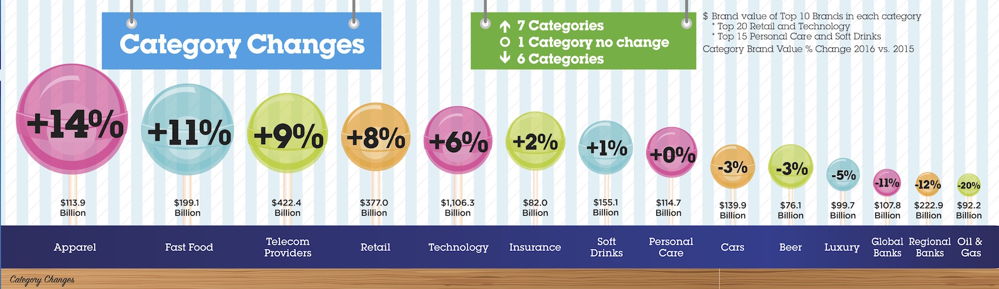

Si consideri il seguente grafico preso dal 2016 BrandZ™ Top 100 Most Valuable Global Brands Report.
Il grafico riporta alcune informazioni sulla variazione di valore dei migliori Brand globali per diverse categorie tra 2015 e 2016.
Analisi
Analizzare il grafico sopra riportato secondo gli aspetti seguenti:Question:- è stata definita chiaramente una domanda (o più di una) a cui la visualizzazione risponde?
L'obiettivo del grafico è evidenziare la variazione di valore di alcune categorie di brand dal 2016 al 2016.
Data:- i dati mostrati sono validi e supportano la domanda?
I dati mostrati sono limitati e rispondono completamente alla domanda; in particolare:
- I valori assoluti di valore si riferiscono ai migliori 10 marchi (top 10 brands)
e non al valore complessivo della categoria. Ma con due eccezioni:
- Per Retail e technology si considerano i miglioro 20
- Per Personal care e Soft drinks si considerano i migliori 15
- Invece la variazione, presumibilmente, si riferisce alla variazione di tutti i marchi della categoria e non solamente dei migliori 10.
- I valori assoluti di valore si riferiscono ai migliori 10 marchi (top 10 brands)
e non al valore complessivo della categoria. Ma con due eccezioni:
Visual:le caratteristiche visuali sono usate appropriatamente?
Riguardo gli aspetti visuali si valuti l’integrità visuale secondo i tre aspetti:
Proportionality:- le misure sono riportate in maniera uniformemente proporzionale?
I valori di variazione percentuali non sono riportati con una proporzione uniforme nella dimensione delle bolle. Esiste un valore 0 che teoricamente dovrebbe corrispondere ad una dimensione nulla.
I valori negativi sono rappresentanti come più piccoli, senza una chiara proporzionalità o regola di codifica.
Potenzialmente la posizione dei centri delle bolle rispetto alla base del grafico potrebbe rappresentare il valore, tuttavia questo non è esplicitato.
Utility:- tutti gli elementi presenti nel grafico trasmettono informazioni utili?
Ci sono diversi elementi puramente decorativi che distraggono dal messaggio quantitativo: lo sfondo a righe, i riflessi stilizzati sulle bolle (lecca-lecca) i bastoncini che sorreggono le bolle, la striscia effetto legno alla base del grafico.
Il cartello con l'informazion su quanti salgono/scendono o sono stabili dovrebbe essere desumibile dal grafico ed è sostanzialemnte ridondante.
La dimensione variabile dei caratteri con le percentuali è poco utile a trasmettere i valori relativi.
Clarity:- i dati del grafico sono chiaramente identificabili e comprensibili (opportunamente descritti)?
La legenda sui valori riporta le due misure invertite: in alto menziona il valore assoluto in $ che si trova in basso mentre in basso menziona la % di variazione che si trova in alto.
Le percentuali negative sono riportate con una dimensione di carattere molto piccola
Nell'ipotesi che la posizione delle bolle rappresenti i valori di variazione, manca un eventuale asse verticale ed una linea corrispondente allo zero. Inoltre l'etichetta con il valore assoluto, riportate sul tratto verticale potrebbe suggerire che l'altezza rappresenti invece tale valore (ma così non è).
Design
Riprogettare la visualizzazione in modo da risolvere i problemi evidenziati nell'analisi.
In particolare evidenziare la variazione di valore e il valore tipico di un brand nelle diverse categorie.
Una prima soluzione consite in una coppia di diagrammi a barre affiancati.
I dati devono essere mostrati ordinati secondo un criterio significativo. Una possibile aggiunta è quella di permettere di selezionare diversi criteri di ordinamento.
Una seconda soluzione consite in tre diagrammi a barre affiancati che riportano anche la variazione in valore assoluto. Anche qui è necessario ordinare significativamente i dati.
Inserire le risposte all'interno del presente file,
in particolare negli elementi <div>
che hanno come classe answer.